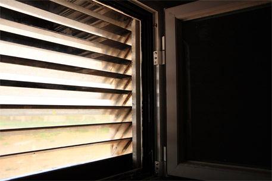

安全膜+结构锚固系统
安全膜配合结构锚固系统安装在原有的窗体上，可使安全膜和窗体框架、墙体锚固在一起，当玻璃遭到强烈的物理撞击时提供更有效的防护，极大降低和避免人身伤害和财产损失。
结构锚固系统可有效提高破窗盗抢的难度。
结构锚固系统可以替换现有的金属防护护栏，提升建筑外观的美观。
在一定距离内，结构锚固系统还可以有效阻挡爆炸产生的强大气浪，避免爆炸产生的冲击波对人身的伤害，抵御爆炸产生的光热辐射，避免玻璃碎片对室内人员造成的二次伤害。
安全膜+透明护栏系统
透明护栏系统拥有金属护栏的特性，同时外观透明不可见，在提供高安全性的同时又保证整体美观。
护栏采用独特的原装进口聚碳酸酯材料制成，极高的韧性缓冲了爆炸产生的冲击波和强击造成的损坏。
当玻璃整体掉落时保证玻璃整体不脱离窗体，同时还可以阻挡非法人员进入。配合结构锚固系统使用更能增强窗户整体的安全性。
国内外相关测试结果如下：
ATI抗风压测试 （2005年12月） | 12mil安全膜 | *标准结构负载压力245PSF（=3598公斤力/平方米） *失败时压力265PSF（=3891公斤力/平方米） | 达到美国建筑材料与测试协会ASTM E330-97el标准。 |
12mil安全膜+锚固系统 | *标准结构负载压力420PSF（=6167公斤力/平方米） *失败时压力440PSF（=6461公斤力/平方米） | 达到美国建筑材料与测试协会ASTM E330-97el标准。 |
佛罗里达建筑规范—防飓风测试 （2006年7月） | 12mil安全膜 | 模拟风力测试。覆膜玻璃可承受速度为140FPS(=42.7米/秒)的8毫米钢球撞击，不会发生穿透。 | 通过TAS201-94测试认证。 |
标准静态空气压力负载测试。在正向压力47.4 PSF（=696公斤力/平方米）作用下，边缘最大偏离0.09英寸（=2.3毫米），中心最大偏离0.52英寸（=13.2毫米）。 | 通过TAS202-94测试认证。 |
循环风压力负载测试。模拟50-3500圈循环风力，在正向压力0-31.6PSF（=464公斤力/平方米）作用下，中心最大偏离0.47英寸（=11毫米），边缘最大偏离0.1（=2.5毫米）英寸。反向压力0-39.8 PSF（=585公斤力/平方米）作用下中心最大偏离0.52英寸（=13毫米），边缘最大偏离0.15英寸（=3.8毫米）。 | 通过TAS203-94测试认证。 |
MYY爆炸测试 （2011年7月） | 12mil安全膜+锚固系统 | 通过6.06psi（=4261公斤力/平方米）超压，57.85PSI*msec冲量爆炸测试。 | 达到美国 GSA防护 C级标准。 |
公安部防爆测试 （2013年5月） | 双侧12mil安全膜+锚固系统 | 通过超压值15.95PSI（=11214公斤力/平方米）爆炸测试。 |
|
特种防弹防爆窗
整个窗体外型如同百叶窗一般，不但可以保证室内向室外良好的单向视觉观察效果，在采光上也不受到任何影响。窗体由多块特种防弹镜面钢板通过一定角度排列安装在特制的钢制框架上，通过光线折射原理还原出室外的视物，和肉眼在正常无障碍状况下看到的视物几乎没有差别。
在建筑物墙体能承受的条件下，它不但能防御狙击步枪的射击，甚至是火箭炮弹的袭击也几乎对室内人员无法造成任何危害，（是否如此描述）特别适合安装于敏感区域或石化厂区周边等高危地点。
